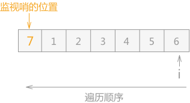
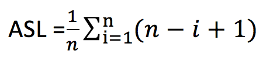
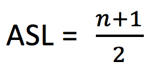
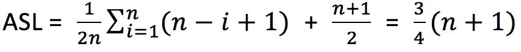
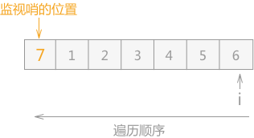
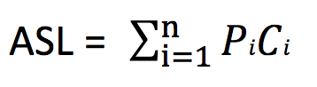
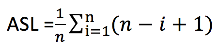
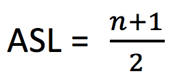
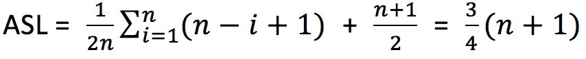

顺序查找算法详解（包含C语言实现代码）
通过前面对静态查找表的介绍，静态查找表即为只做查找操作的查找表。
静态查找表既可以使用顺序表表示，也可以使用链表结构表示。虽然一个是数组、一个链表，但两者在做查找操作时，基本上大同小异。
顺序查找的具体实现代码为：

图 1 顺序表中的监视哨
顺序表的一端添加用户用于搜索的关键字，称作“监视哨”。
所以查找算法衡量好坏的依据为：查找成功时，查找的关键字和查找表中的数据元素中进行过比较的个数的平均值，称为平均查找长度（Average Search Length，用 ASL 表示）。
例如，对于具有 n 个数据元素的查找表，查找成功的平均查找长度的计算公式为：

换算后，得：

对于含有 n 个数据的表来说，每次查找失败，比较的次数都是 n+1。所以查找算法的平均查找长度的计算公式为：

静态查找表既可以使用顺序表表示，也可以使用链表结构表示。虽然一个是数组、一个链表，但两者在做查找操作时，基本上大同小异。
本节以静态查找表的顺序存储结构为例做详细的介绍。
顺序查找的实现
静态查找表用顺序存储结构表示时，顺序查找的查找过程为：从表中的最后一个数据元素开始，逐个同记录的关键字做比较，如果匹配成功，则查找成功；反之，如果直到表中第一个关键字查找完也没有成功匹配，则查找失败。顺序查找的具体实现代码为：
#include <stdio.h>
#include <stdlib.h>
#define keyType int
typedef struct {
keyType key;//查找表中每个数据元素的值
//如果需要，还可以添加其他属性
}ElemType;
typedef struct{
ElemType *elem;//存放查找表中数据元素的数组
int length;//记录查找表中数据的总数量
}SSTable;
//创建查找表
void Create(SSTable **st,int length){
(*st)=(SSTable*)malloc(sizeof(SSTable));
(*st)->length=length;
(*st)->elem =(ElemType*)malloc((length+1)*sizeof(ElemType));
printf("输入表中的数据元素：\n");
//根据查找表中数据元素的总长度，在存储时，从数组下标为 1 的空间开始存储数据
for (int i=1; i<=length; i++) {
scanf("%d",&((*st)->elem[i].key));
}
}
//查找表查找的功能函数，其中key为关键字
int Search_seq(SSTable *st,keyType key){
st->elem[0].key=key;//将关键字作为一个数据元素存放到查找表的第一个位置，起监视哨的作用
int i=st->length;
//从查找表的最后一个数据元素依次遍历，一直遍历到数组下标为0
while (st->elem[i].key!=key) {
i--;
}
//如果 i=0，说明查找失败；反之，返回的是含有关键字key的数据元素在查找表中的位置
return i;
}
int main() {
SSTable *st;
Create(&st, 6);
getchar();
printf("请输入查找数据的关键字：\n");
int key;
scanf("%d",&key);
int location=Search_seq(st, key);
if (location==0) {
printf("查找失败");
}else{
printf("数据在查找表中的位置为：%d",location);
}
return 0;
}
可运行代码中设置了一个固定长度为 6 的顺序表，例如在查找表为{1,2,3,4,5,6}找到关键字为 1 的数据元素的位置，则运行效果为：
输入表中的数据元素：
1 2 3 4 5 6
请输入查找数据的关键字：
2
数据在查找表中的位置为：2
同时，在程序中初始化创建查找表时，由于是顺序存储，所以将所有的数据元素存储在数组中，但是把第一个位置留给了用户用于查找的关键字。例如，在顺序表1 2 3 4 5 6
请输入查找数据的关键字：
2
数据在查找表中的位置为：2
{1,2,3,4,5,6}中查找数据元素值为 7 的元素，则添加后的顺序表为：

图 1 顺序表中的监视哨
顺序表的一端添加用户用于搜索的关键字，称作“监视哨”。
图 1 中监视哨的位置也可放在数据元素 6 的后面（这种情况下，整个查找的顺序应有逆向查找改为顺序查找）。
放置好监视哨之后，顺序表遍历从没有监视哨的一端依次进行，如果查找表中有用户需要的数据，则程序输出该位置；反之，程序会运行至监视哨，此时匹配成功，程序停止运行，但是结果是查找失败。
顺序查找的性能分析
查找操作的性能分析主要考虑其时间复杂度，而整个查找过程其实大部分时间花费在关键字和查找表中的数据进行比较上。所以查找算法衡量好坏的依据为：查找成功时，查找的关键字和查找表中的数据元素中进行过比较的个数的平均值，称为平均查找长度（Average Search Length，用 ASL 表示）。
例如，对于具有 n 个数据元素的查找表，查找成功的平均查找长度的计算公式为：

Pi 为第 i 个数据元素被查找的概率，所有元素被查找的概率的和为 1；Ci 表示在查找到第 i 个数据元素之前已进行过比较的次数。若表中有 n 个数据元素，查找第一个元素时需要比较 n 次；查找最后一个元素时需要比较 1 次，所以有
一般情况，表中各数据元素被查找的概率是未知的。假设含有 n 个数据元素的查找表中，各数据被查找的概率是相同的，则：
Ci = n – i + 1 。

上边的平均查找长度是在假设查找算法每次都成功的前提下得出的。而对于查找算法来说，查找成功和查找失败的概率是相同的。所以，查找算法的平均查找长度应该为查找成功时的平均查找长度加上查找失败时的平均查找长度。如果对于查找表中各个数据元素有可能被查找的概率提前已知，就应该根据其查找概率的大小对查找表中的数据元素进行适当的调整：被查找概率越大，离查找出发点 i 越近；反之，越远。这样可以适当的减少查找操作中的比较次数。
对于含有 n 个数据的表来说，每次查找失败，比较的次数都是 n+1。所以查找算法的平均查找长度的计算公式为：

总结
本节主要介绍了静态查找表的顺序存储的表示和查找算法的实现，其中使用监视哨对普通的顺序表的遍历算法做了改进，在数据量大的情况下，能够有效提高算法的运行效率。关注公众号「站长严长生」，在手机上阅读所有教程，随时随地都能学习。内含一款搜索神器，免费下载全网书籍和视频。

微信扫码关注公众号